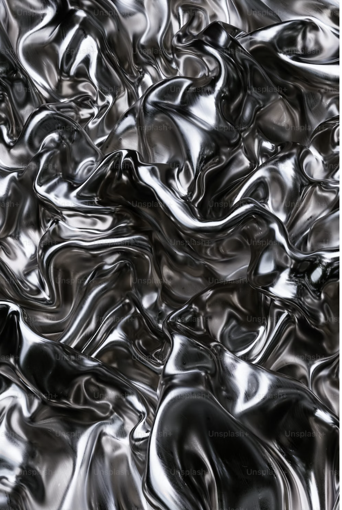

I am a principal UX/UI designer working where clinical reality, hardware constraints, and interface craft meet. The through-line is legibility under pressure — making complex systems feel oriented rather than overwhelming, whether the surface is a surgical console, a cardiovascular platform, or a brand system that has to hold together across touchpoints.
This portfolio is a working archive of that range. Some cases are public, others stay behind a gate. What follows is less a résumé than a set of chapters: where the work is pointed now, how I got here, and the places that shaped the practice.
My Current Focus
At Medtronic, most of my energy goes toward Altera™ and related cardiovascular programs — translating clinical constraints, engineering realities, and regulatory caution into interfaces teams can actually ship. The work is less about decoration than orientation: where am I in the procedure, what changed, and what needs attention next.
Emerging technology is the other half of the lens. I am most interested when a product is still finding its shape — when the design problem includes education, trust, and the slow work of making a new tool feel inevitable rather than intimidating.
My Story
The practice sits at the intersection of product design, visual systems, and the kind of complex tooling that only shows its value after months inside a real workflow. Most days that means surgical robotics, cardiovascular platforms, and embedded UIs that have to perform when the room is loud and the stakes are high.
Studio craft and in-house product work feed each other. Sketching, photography, and packaging still inform how I think about hierarchy and materiality, even when the deliverable is a screen inside an operating environment. I like projects where brand, hardware, and software have to agree.

Childhood
I grew up paying attention to how things were made — taking apart radios, redrawing logos from memory, and noticing when a package or sign felt confident versus careless. It was not a straight line to design school, but the habit of looking closely at objects and interfaces started early.
Family road trips, basement workshops, and long stretches of drawing at the kitchen table taught me that making is a form of thinking. That still shows up in how I work: sketch first, refine in context, and treat the hand as a legitimate research tool.
Design School
Formal training sharpened the instinct into a discipline: typography, systems thinking, critique culture, and the uncomfortable but useful practice of defending ideas in public. School is where packaging, identity, and interaction stopped feeling like separate hobbies and became one language.
The best assignments were the ones with real constraints — limited palettes, awkward formats, clients who changed their minds. That rhythm prepared me for product work more than any single class title did.
Boston
Boston layered agency life, studio nights, and the density of a city that takes craft seriously. It is where client work, side projects, and long conversations about what good design owes its audience all collided — med-tech adjacent work included, long before the current role.
The city taught pace: fast feedback, direct critique, and the expectation that visual work should survive contact with engineering and business reality, not just a portfolio slide.
Maynard
Maynard is the quieter counterweight — studio space, slower mornings, and room to photograph, sketch, and prototype without the constant pull of a commute. It is where personal work and portfolio thinking get the time they rarely receive during a sprint.
If something here resonates, reach out. I am always open to thoughtful collaborations and hard problems worth solving carefully — especially when the answer has to work in the room, not just on the wall.